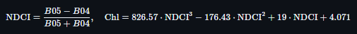

Fuente: Sentinel-2 L2A (Copernicus).
Cobertura temporal: feb–ago 2025 (≈7 meses), 29 fechas con nubosidad <20% (estos archivos se generan con el jupyter notebook y se encuentran como dates.txt e intervals.json):
2025-02-07
2025-02-10
2025-02-25
2025-02-27
2025-03-02
2025-03-04
2025-03-07
2025-03-09
2025-03-12
2025-03-14
2025-03-19
2025-03-22
2025-03-24
2025-03-26
2025-04-03
2025-04-11
2025-04-13
2025-04-15
2025-04-16
2025-04-18
2025-04-28
2025-05-03
2025-05-13
2025-05-28
2025-07-10
2025-07-17
2025-07-20
2025-07-24
2025-08-01Cobertura espacial: dos AOI rectangulares en WGS84:
Productos descargados: colecciones por fecha para NDVI, NDWI y clorofila-a (Cyano); consolidación en stacks multibanda + catálogos por fecha en data/export_consolidated/.
Evidencia: estructura de carpetas, GeoTIFFs por fecha en data/<Lago>/Cyano_SH/*.tif, y stacks en export_consolidated/.
|
|
|

|

|
Interactivos (folium):
data/maps/Atitlan_CYANO_2025-05-03.html, Amatitlán data/maps/Amatitlan_CYANO_2025-05-28.html.Método: NDCI sobre Sentinel-2 (bandas B05/B04) con máscara de agua y conversión a clorofila-a mediante polinomio:
|
 |
(implementado en el evalscript y aplicado por fecha).
data/<Lago>/Cyano_SH/ y stack multitemporal en export_consolidated/.Evidencia: mapas estáticos por fecha y comparativos 2x2.
data/analysis/*_CYANO_series.csv y gráficos:

|

|
analysis/Atitlan_CYANO_peaks.json, report_outputs/peaks_summary.json).analysis/Amatitlan_CYANO_peaks.json).Resultados numéricos (data/report_outputs/correlations_summary.json):
Soporte gráfico: dispersogramas en data/report_outputs/*_scatter_*.png.
En Atitlán, los picos de Chl-a se alinean con escenas de alto NDVI y NDWI más negativo; esto sugiere estacionalidad/condiciones ambientales coincidentes con proliferación (p. ej., más biomasa en laderas/riveras y menor señal hídrica en orillas en esas fechas). En Amatitlán, la señal de NDVI/NDWI no explica bien la variación de Chl-a (posible influencia de forzantes locales no capturados por estos índices y/o menor número de pares válidos).